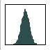

<body bgcolor="#ffffff">
 
<link href="html/table.css" rel="stylesheet" type="text/css">

<table  width="100%" border=0 cellspacing=0 cellpadding=0 style="padding: 0 0 5px 0; border: 1px solid #919699; background: #e9e9e9;">
<tr><td>&nbsp;<br>

<center>
   <b><i><font color="#000000" size="+2">ioda</font></i></b>
   <p>
   
</center>

<hr>

<table border=0><tr><td>  

  <li><a href="html/ioda_introduction.html" target="Contents">Introduction</a></li>
  <li><a href="html/ioda_download.html" target="Contents">Download and run</a></li>
  <li><a href="html/ioda_docker.html" target="Contents">Docker</a></li>
  <li><a href="html/ioda_files.html" target="Contents">Data files</a></li>
<!--  
  <li><a href="html/ioda_usage.html" target="Contents">Usage</a></li>
  <li><a href="html/ioda_top_menu.html" target="Contents">Top menu</a></li>
  <li><a href="html/ioda_camera_panel.html" target="Contents">Camera panel</a></li>
  <li><a href="html/ioda_params_panel.html" target="Contents">Params panel</a></li>
-->
  <li><a href="html/ioda_hdf5.html" target="Contents">HDF5 file</a></li>
  <li><a href="html/ioda_fits_image_hdu.html" target="Contents">FITS / IMAGE_HDU</a></li>
  <li><a href="html/ioda_root.html" target="Contents">CERN/ROOT file</a></li>
  <li><a href="html/ioda_gopaw.html" target="Contents">.kumac and gopaw core</a></li>
  <!--  
  <li><a href="html/ioda_fits_binary_tbl.html" target="Contents">FITS / BINARY_TBL</a></li>
  <li><a href="html/ioda_aida.html" target="Contents">AIDA file</a></li>
  <li><a href="html/ioda_fog.html" target="Contents">FOG file</a></li>
  <li><a href="html/ioda_ntuple.html" target="Contents">ntuple</a></li>
  -->
  <!--  
  <li><a href="html/ioda_examples.html" target="Contents">examples</a></li>
  <li><a href="html/ioda_plot_style.html" target="Contents">plot style</a></li>
  -->
  <li><a href="html/ioda_style.html" target="Contents">Style customization</a></li>
  <li><a href="html/ioda_gallery.html" target="Contents">Gallery</a></li>
<!--  
  <li><a href="html/ioda_release_notes.html" target="Contents">Release notes</a></li>
  <li><a href="http://inexlib.lal.in2p3.fr" target="_top">inlib / exlib</li>
  <li><a href="http://wall.lal.in2p3.fr" target="_top">ioda and wall</li>
  -->
  <li><a href="wasm/index.html" target="_top">wasm (experimental)</a></li>
  <li><a href="http://gbarrand.github.io" target="_top">softinex portal</li>
<!--  
  <li><a href="http://softinex.lal.in2p3.fr" target="_top">softinex portal</li>
  -->
  
</td></tr></table>

<hr>

<center>
<address>
  <a href="mailto:barrand@lal.in2p3.fr">Guy Barrand</a>
  <font size="-1" color="#252E78">CNRS/IN2P3/LAL/EP/SFT</font>
</address>
</center>

</body>

